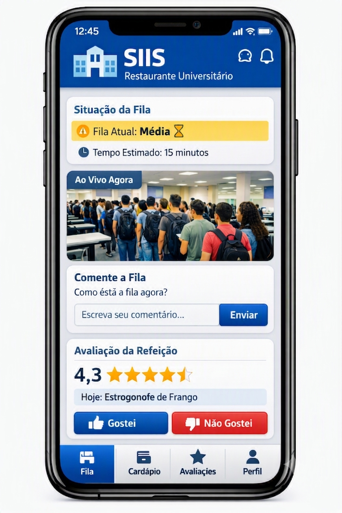

Sobre o Aplicativo
O SIIS foi criado para ajudar estudantes universitários a acompanharem informações do Restaurante Universitário em tempo real. Com a colaboração da própria comunidade acadêmica, é possível consultar filas, cardápios e avaliações das refeições de forma rápida e prática.
Principais Funcionalidades
- ✦ Acompanhe o nível de movimentação do RU em tempo real.
- ✦ Consulte o cardápio antes de sair de casa ou da sala de aula.
- ✦ Veja avaliações feitas por outros estudantes.
- ✦ Receba informações atualizadas pela comunidade universitária.
Como Funciona
Acesse o aplicativo
Entre no SIIS utilizando seu dispositivo móvel.
Consulte informações
Veja filas, cardápio e avaliações do RU.
Compartilhe experiências
Avalie refeições e ajude outros estudantes.
Veja o SIIS em ação
Conheça a interface do SIIS e veja como será simples acompanhar a fila, consultar o cardápio e avaliar as refeições do Restaurante Universitário.

⬇ Download
Disponível gratuitamente para dispositivos móveis.
💬 O que os usuários dizem
"Aplicativo muito útil. Agora consigo organizar melhor meus horários para ir ao RU!"
— Estudante de Engenharia
"Me ajudou bastante no dia a dia a evitar as filas gigantes no horário de pico."
— Usuária Ativa
Contato
📸 @SIIS